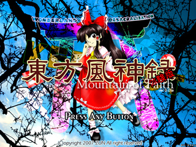

| 動作環境 | |
|---|---|
| 必須環境 | |
| ＯＳ | Windows 2000/XP なお、DirectX 9 (April 2007) 以降の最新版がインストールされていること |
| ＣＰＵ | Pentium 以降（もしくは互換）のCPU （推奨 800MH以上） |
| ビデオカード | DirectX9以上の DirectGraphic 対応の高速なビデオカード(推奨 VRAM 32M以上) |
| 推奨環境 | |
| サウンド | Direct Sound対応のサウンドカード |
| その他 | パッドコントローラ ある程度の弾幕免疫 弾幕神への信仰心 |